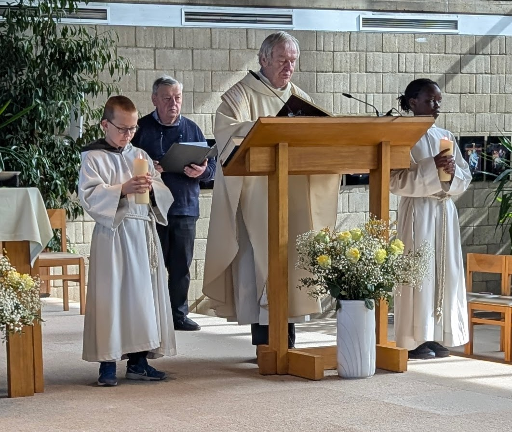

In een samenleving vol zelfliefde-cursussen, chakra healing en new age spiritualiteit, valt een opvallend patroon op: mensen die wekelijks naar de kerk gaan, kloppen vaker dan gemiddeld aan de top van organisaties, politiek en maatschappelijk leven. Toeval? Waarschijnlijk niet. Ook wij als catechisten zien het met eigen ogen, week na week.
Ritme als fundament
Wekelijks naar de kerk gaan is in de eerste plaats een oefening in discipline. Wie elke week terugkeert, ongeacht het seizoen, de drukte of de stemming, bouwt een spier die verder reikt dan geloof alleen: de spier van het engagement. Leiders zonder die oefening geven vaak op wanneer het lastig wordt. Kerkgangers zijn al van kinds af gewend om te verschijnen, ook als het niet uitkomt. Onderzoek wijst uit dat wekelijkse kerkgang een van de sterkste voorspellers is van academisch succes: religieuze jongeren behalen meetbaar hogere schoolprestaties, zijn minder vaak afwezig en studeren vaker door na het middelbaar dan leeftijdsgenoten die nooit een kerk bezoeken (Horwitz, God, Grades, and Graduation, Oxford University Press, 2022).
In onze catechesegroepen zien we dit patroon keer op keer bevestigd. De jongeren die het meest aanwezig zijn, die komen ondanks voetbaltraining, familieweekends en drukke schoolagenda's, zijn precies diegenen die het meeste potentieel tonen. Niet omdat ze slimmer zijn of bevoordeeld, maar omdat ze al vroeg de gewoonte van het engagement hebben aangeleerd.
De misdienaar: leider in de dop
Weinig rollen bereiden een kind zo vroeg voor op publiek optreden als die van misdienaar. Wie als tienjarige voor een volle kerk staat, de juiste gebaren op het juiste moment uitvoert en de priester assisteert zonder aarzelen, doet aan iets wat de meeste volwassenen spannend vinden: presteren voor een publiek, met protocol en verantwoordelijkheid. Misdienaars leren stiptheid, samenwerking en hoe je je gedraagt in een omgeving waar van jou verwacht wordt dat je het goede voorbeeld geeft.
Wij zien dat potentieel week na week in onze eigen groepen. De jongeren die als misdienaar dienen, dragen iets met zich mee wat moeilijk te benoemen maar makkelijk te herkennen is: ze weten hoe het voelt om ergens voor te staan. De discipline van het altaar, de hiërarchie van de sacristie, het gevoel van deel uitmaken van iets groters dan jezelf: dat zijn fundamenten die je niet leert uit een boek.

Formatieve jaren
De ervaringen die jongeren opdoen in de kerkgemeenschap, van verantwoordelijkheid nemen tot samenwerken, vormen de basis voor hun latere rol in de maatschappij.
Een netwerk met diepgang
De parochieschool, het jeugdkamp, het koor, de bestuursraad van de parochie: wie actief deelneemt aan een geloofsgemeenschap, strompelt al vroeg in verantwoordelijkheidsrollen. Harvard-socioloog Robert Putnam beschrijft religieuze gemeenschappen in zijn invloedrijke werk Bowling Alone als broedplaatsen voor maatschappelijke vaardigheden, die gemeenschapsnormen bevorderen en een toegangspoort bieden tot burgerlijk engagement.
Putnam maakt daarbij een belangrijk onderscheid: kerkgang werkt zowel als "bridging" als "bonding" sociaal kapitaal. Het verbindt mensen uit verschillende sociale klassen met elkaar, terwijl het tegelijk een gedeeld gevoel van doel en identiteit versterkt. Die combinatie is zeldzaam en waardevol. Waar LinkedIn je verbindt met gelijkgestemden uit dezelfde sector, brengt een parochie de bakker naast de bedrijfsleider, de gepensioneerde leraar naast de jonge ambtenaar.
Wij als catechisten zien ook welke jongeren dat netwerk actief benutten. Het zijn opnieuw de regelmatige aanwezigen die vriendschappen smeden buiten hun eigen klas, die zich thuis voelen bij mensen van verschillende leeftijden, die leren luisteren naar iemand anders dan hun eigen vriendengroep.
Moreel kompas als competitief voordeel
Een van de meest onderschatte voordelen van een religieuze opvoeding is het meegeven van een expliciete ethische structuur. Wekelijkse kerkgangers worden blootgesteld aan verhalen over verantwoordelijkheid, vergeving, schuld en dienstbaarheid. Ze leren dat macht en moraal onlosmakelijk verbonden zijn. Uit meerdere studies blijkt dat religieuze jongeren op een breed scala van uitkomsten maatschappelijk actiever zijn dan hun minder religieuze leeftijdsgenoten, waaronder hogere betrokkenheid bij vrijwilligerswerk en engagement voor het gemeenschapsleven (Putnam & Campbell, American Grace, 2010). Recenter longitudinaal onderzoek bevestigt dat religieuze betrokkenheid in de jeugd een van de sterkste voorspellers blijft van vrijwilligerswerk in de volwassenheid (Lim & Wiertz, American Sociological Review, 2024).
Van de jongeren die die morele vorming wél ontvangen en wél opdagen, verwachten wij als catechisten iets bijzonders: dat ze die discipline niet voor zichzelf houden. Dat ze de jongeren die die gewoonte nog niet hebben, niet veroordelen, maar overtuigen. Met hun voorbeeld, hun aanwezigheid, hun verhaal.
Verlies, verdriet en veerkracht
Kerkgemeenschappen begeleiden hun leden door rouw, ziekte en persoonlijke crisis. Wie deel uitmaakt van zo'n gemeenschap, leert al vroeg dat het leven niet lineair is en dat tegenslag geen zwakte is maar een gegeven. Die emotionele volwassenheid maakt mensen effectievere leiders: ze raken minder snel in paniek, empathiseren makkelijker, en houden staande wanneer anderen wankelen.
Ook hier zien wij het verschil in onze groepen. Jongeren die regelmatig komen, hebben vaak al geleerd hoe een gemeenschap omgaat met moeilijke momenten. Ze zijn veerkrachtiger, geduldiger, en beter in staat om anderen te steunen, precies de eigenschappen die van een goede leider worden verwacht.
Conclusie
De leiders van morgen worden niet alleen gevormd door MBA-programma's of startup-incubatoren. Ze worden ook gevormd door zondagen. Door koren, kerkkassen en kringgesprekken. Door de misdienaar die leert stilstaan, presteren en dienen voor hij of zij tien jaar oud is.
Wij als catechisten verwachten van die jongeren, van diegenen die de discipline hebben om telkens opnieuw te verschijnen, dat ze die kracht inzetten voor anderen. Dat ze de jongeren die die gewoonte nog niet hebben niet aan hun lot overlaten, maar ze bij de arm nemen en zeggen: kom ook. Want de sterkste vorm van leiderschap begint niet met een speech. Het begint met iemand meenemen.